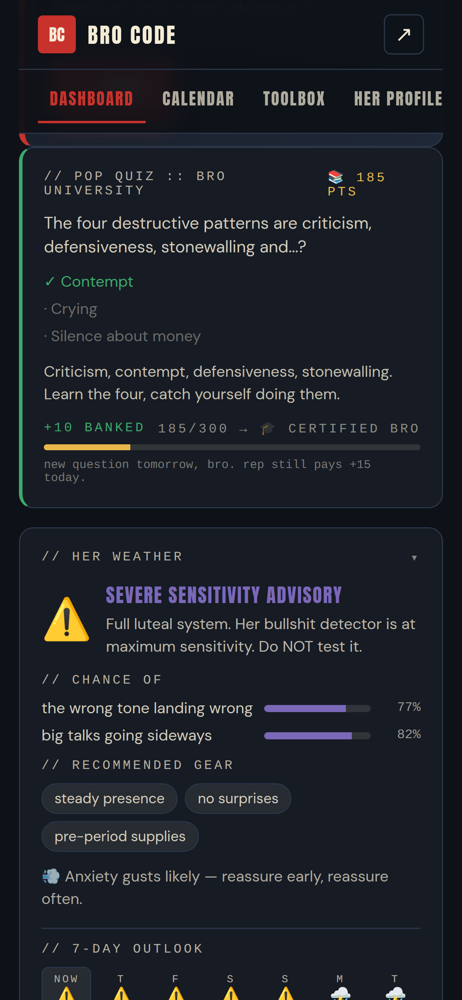
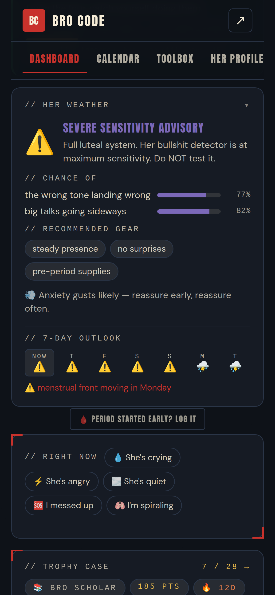
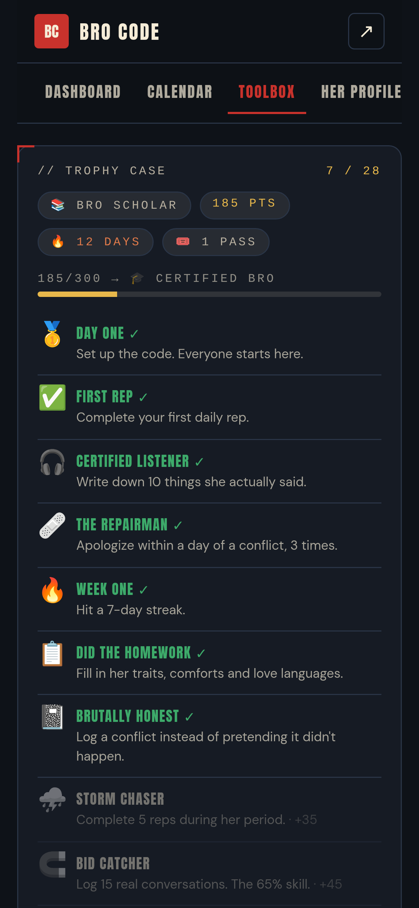
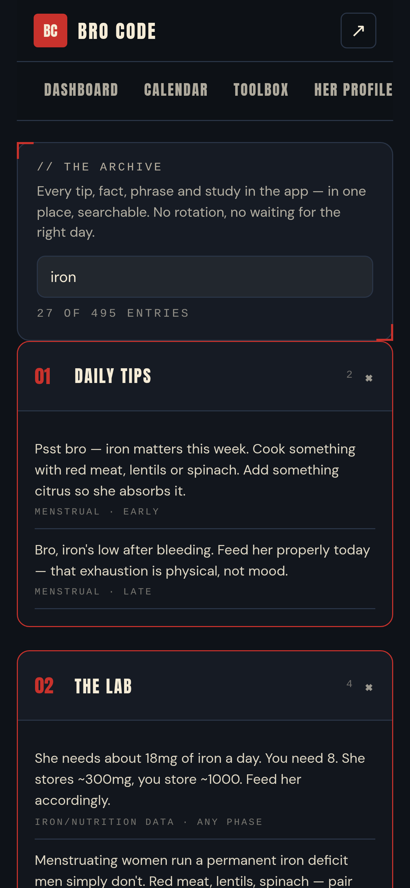

The playbook
for showing up.
For guys who want to be a better partner. Funny on the surface. Peer-reviewed underneath. Lives on your phone.

One small act. One question. One forecast.
The app reads where she is in her cycle and gives you exactly three things a day. That's the whole routine — under two minutes, and the research says small daily acts beat grand gestures anyway.
Daily Rep
One specific move tuned to her phase and her profile. Hit DONE when you've actually done it — out there, not in here. Under every rep, one line of the science behind it.
+15 PTS · REAL-LIFE POINTSPop Quiz
One question a day from Bro University: 64 of them, all pulled from real studies. Get it right and it explains why. Get it wrong and it still explains why.
+10 RIGHT · +3 WRONG — YOU LEARNED
Her Weather
A meteorologist's take on her week. Phase-driven, profile-aware, with a 7-day outlook and a warning when a front is moving in.
// her weather · late lutealSEVERE SENSITIVITY ADVISORY — Full luteal system. Her bullshit detector is at maximum sensitivity. Do NOT test it. Gear: steady presence, no surprises, pre-period supplies.

Points, ranks, and a trophy case.
Every point comes from something you did with her or something you learned about her. Six ranks to climb, 28 trophies to earn, and a streak that survives real life — you bank a Bro Pass every seven days, so one rough day doesn't zero a 90-day run.
- 🌱Rookie0 PTS
- 🤝Solid Bro50 PTS
- 📚Bro Scholar150 PTS
- 🎓Certified Bro300 PTS
- 🏆Bro Legend600 PTS
- 👑Hall of Fame1000 PTS
- 🧲Bid CatcherLog 15 real conversations. The 65% skill — turning toward her small bids for attention is the single biggest predictor of a relationship lasting.
- 🩹The RepairmanApologize within a day of a conflict, 3 times. Repair attempts are what separate couples who last from couples who don't.
- 🥩Iron ChefShow up on day 1 of her cycle, 3 times. She needs 18mg of iron a day. You need 8.
- ⛈️Storm ChaserComplete 5 reps during her period.
- 🧊UnbotheredA 7-day streak with zero conflicts logged.
- 🎟️Human BeingBurn a Bro Pass. Nobody does this perfectly — the app rewards coming back, never guilts the miss.

Built for her. Specifically her.
Ten seconds of profile turns generic cycle advice into advice about the actual person you live with. Every field you fill in changes what the app says.
- anxiety · ADHD · autism · depression · sensory
- what comforts her — heat, space, being held, words
- her pace and her social battery
- cravings, favourites, dietary stuff
- her contraception — it changes how the calendar reads
- important dates
Late luteal, day 24.
Same day, same phase.
Verified in the test suite: two differently-configured partners get zero overlapping personalized tips.
The part that's actually peer-reviewed.
Every "lab-verified" line in the app traces to a real study. Here are the ones that carry the most weight — and, further down, the ones we're honest about being shaky.
- meta-analysis · 2025
Heat rivals painkillers for cramps
A systematic review of 25 randomised trials found heat therapy reduced period pain comparably to NSAIDs, with fewer side effects. The heating pad is medical equipment.
Frontiers in Medicine, 2025 → - clinical survey · 2025
Your support is measurable
Partner support had a direct effect on premenstrual symptom severity — more supportive partners, less severe symptoms. Being dismissed made distress worse.
PLOS ONE, 2025 → - nutrition data
The iron gap
A menstruating woman needs roughly 18mg of iron a day. A man needs 8. She stores around 300mg; he stores around 1000mg. Feed her accordingly.
NIH Office of Dietary Supplements → - mental-load research · 2024–25
She carries ~71% of the invisible work
The remembering, planning and worrying — not the chores. And it doesn't shrink when you "help more." It shrinks when you own a whole category outright.
Frontiers in Sociology, 2025 → - migraine research
Why the pre-period headache
Estrogen acts as a natural painkiller and regulates blood vessels. When it drops before her period, pain receptors sensitise — and these attacks last up to 35% longer than her other headaches.
UNM Health, 2025 → - Gottman lab · contested
How you argue beats how often
Repair attempts — a joke, a hand, "we're okay" — are what let couples survive frequent conflict. We use the finding; we do not repeat the famous "90% divorce prediction" stat, which was fitted after the fact and failed independent cross-validation.
Heyman & Slep, the critique →
"An app that only tells you what's confirmed is lying by omission. Things in here that are solid: heat therapy for cramps, the iron gap, PMDD prevalence, endometriosis rates, progesterone wrecking luteal sleep, partner support lowering symptom severity. Things that are shakier than the internet claims: cycle-syncing your workouts (2023–25 reviews found phase doesn't meaningfully change performance), the viral ovulation mate-preference studies (large replications mostly failed), the famous 90% divorce prediction number, and the five love languages (a 2024 review found its core assumptions don't hold). We still use pace and love-language preferences — as things SHE told you she likes, not as laws of nature. When the science and her actual words disagree, believe her."
Sources for the shaky ones: cycle phase & performance · love languages review, 2024
495 entries. Searchable.
Every daily tip, every lab line, every quiz question, every decoder phrase, the what-to-say bank, the health literacy deep-dives — in one place, filterable by a word. Type "iron" and the whole app rearranges itself around iron.

If he just showed you this page:
Hi. This is a coach for him, not a tracker of you.
He enters the first day of your last period, and the app tells him what to do on any given day — bring the heating pad, don't start the money conversation this week, ask instead of assuming. It's trying to make him better at being on your team. That's the entire product.
- What it knows: one date, a cycle length, and whatever he chose to note about what helps you. Nothing you didn't tell him.
- Where it lives: only on his phone. There is no account, no server, no company reading it. He can export it or wipe it in two taps, and so can you.
- What it isn't: medical advice, a mood-reading device, or an excuse. If he ever says "is this your cycle?" the app has a page telling him that's the opposite of the point.
The research the app leans on says shared cycle literacy improves symptom management and that partner support measurably lowers symptom severity — but only when it's done in the open. In the app's own words:
// the archive · health literacy"Tracking together isn't surveillance — done openly, it's shared infrastructure. The word that matters is 'openly.'"
If you want, you can fill in your own profile section together. It gets better at him the more it knows about you — on your terms.
Thirty seconds to set up.
No bloated onboarding. No friend invites. Just the math.
- Enter the first day of her last period. That's the only required field.
- The app works out where she is in the cycle and forecasts the next few weeks. It self-corrects every time you log an actual period.
- Every day: one rep, one quiz question, one weather report. Tap DONE when the rep is done in real life.
- When something's happening right now — she's crying, she's angry, you messed up — tap the situation chip for phase-aware moves and exact phrases.
- Rank up. Fill the trophy case. Check the Receipt at the end of each cycle to see how you actually showed up.
Some honesty up front.
Not medical advice. PMDD, endometriosis, heavy bleeding, anything severe — the app's job is to tell you to believe her and back her getting seen, not to diagnose.
She has Clue, Flo, whatever she likes. This is the coach in your pocket, and it works best when she knows it exists.
No account, no server, no analytics, no tracking pixels — not even on this page. Everything lives in your phone's local storage. Export or wipe whenever.
Put it on your home screen.
It's a web app, so there's nothing to download from a store — but the reminders and the app badge only work once it's installed. Takes one tap.